Index
3D printing med OpenScad
Bok 1
2026-03-10 Atombjörn
__________________
Beskrivning
Introduktion
Skapa en kub
Rendera. En stl fil skapas
Öppna PrusaSlicer
Slica. En .gcode fil skapas
Sänd .gcode till 3D printern med USB-sticka.
Sänd .gcode till 3D printern med WiFi.
Innehåll
Förord
OpenScad
Byggelement, Primitives
Förord
Det här är en bok som vill introducera 3D printing för alla.
Du behöver inga förkunskaper!!
Bara att du är nyfiken och vill komma igång med 3D.
Från ide till färdig figur.
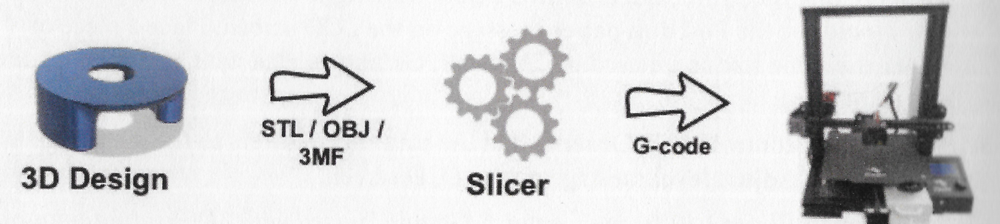
Du har en ide om vad du vill skriva ut i 3D. Du skapar det i ett CAD-program,
Computer Aided Design.
I CAD-programmets bildfönster bygger du upp ditt projekt.
I programmet finns det en funktion rendera som skapar en stl-fil (Standard Tessellation Language) om slicern importerar och förädlar till en gcode fil.
Gcode-filen sänds antingen med en USB eller via WiFi till skrivaren.
OpenScad
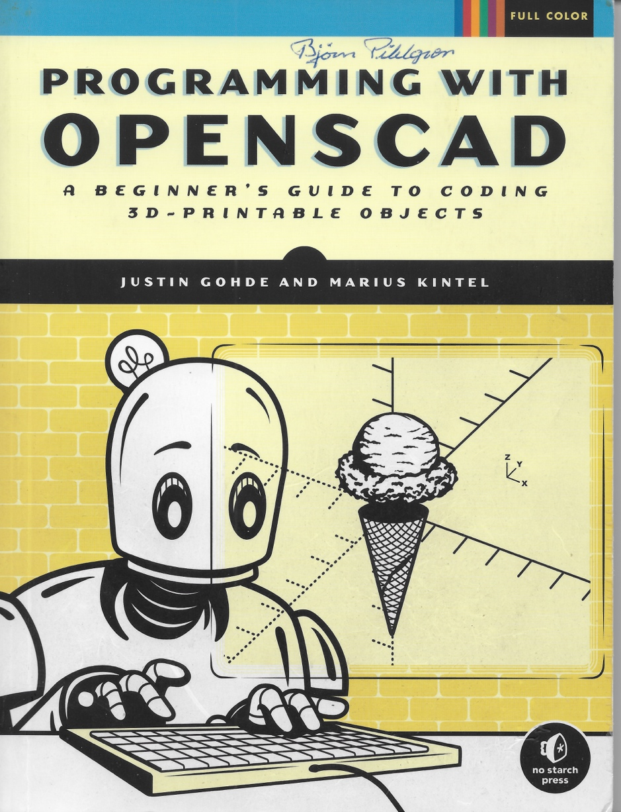
Ett exemplar finns på Makerspace.
OpenScad finns på UMS datorer.
Jag har valt OpenScad för att jag kan det och för att det ger en ingång till programmering.
OpenScad är en textbaserad mjukvara till för att skapa solida 3D modeller. Du designar dina modeller med en skriven kod. Det ger dig full kontroll över modelleringsprocessen och gör det enkelt att göra ändringar.
Programmet har ett antal byggelement, PRIMITIVES, vilka kan kombineras och förändras på tusentals sätt.
PRIMITIVES
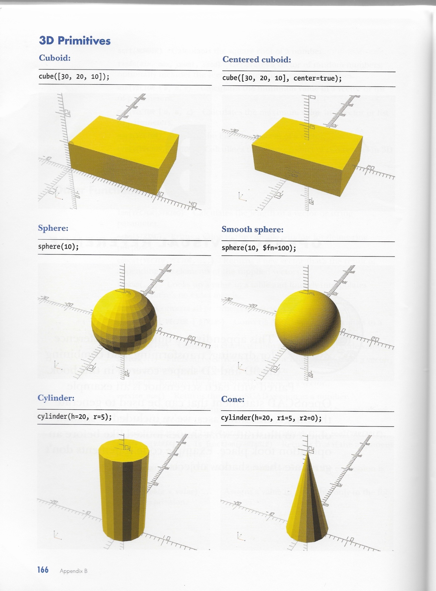
ALLT om primitives och hur dom kan kombineras finns i boken"Programming with OPENSCAD"
En första demo.
Innan du fortsätter skall du ha skapat en mapp där du sparar dina filer.
När du öppnar programmet ser du:
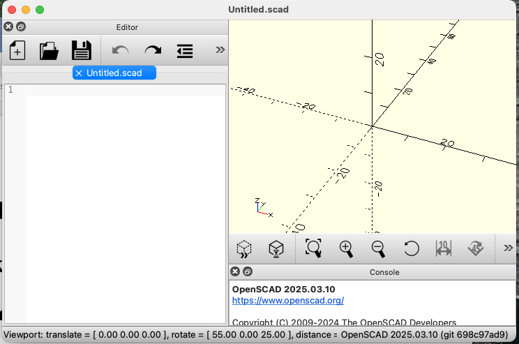
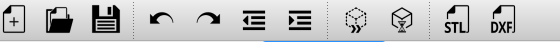
Och ett tomt fält EDITORN till vänster om BILDFÄLTET.
Steg 1: Skapa en kub.
Skriv i editorn: OBS! semikolon ;
cube(10);
Kör genom att trycka på
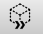
Vips så dyker det upp en kub i bildfältet.Döp modellen och spara den. Den sparade filen har fått tillägget .scad
Steg 2: Rendera
Tryck på
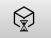
En stl fil skapas. Det syns inte.Tryck på
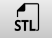
Du ombeds att spara filen. Den får samma namn som scad-filen med tillägget .stl.Steg 3: Slica
Öppna programmet PrucaSlicer!
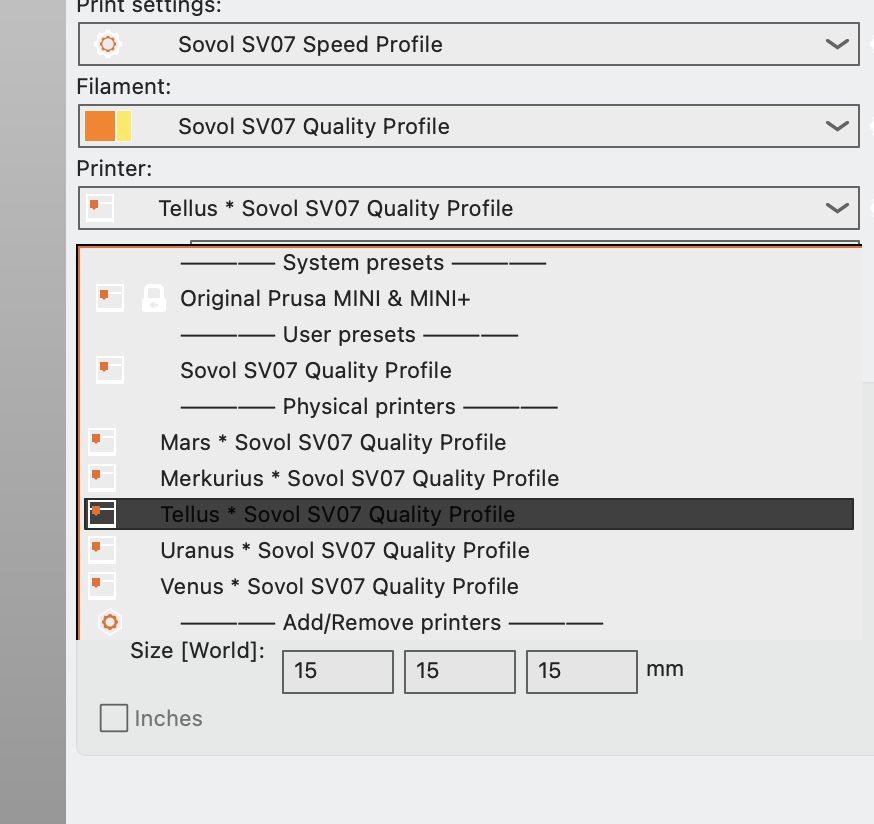
Välj en printer och starta den. Skriv upp printerns IP-adress.
Under File i menyn hittar du Import.
Leta reda på din .stl fil där du sparat den.
Importera! Välj: Import/STL/3MF/STEP....
Ditt objekt dyker upp på Platan. (Plater).
Tryck på Slice now
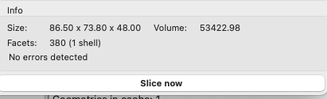
Tryck på Export G-code
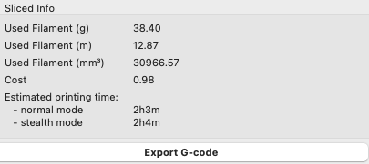
Spara filen som fått samma namn som scad-filen.
Steg 4a: Skriv ut med USB-sticka.
Kopiera filen till en USB som du sätter i din utvalda 3D printer.
PRINTA!
Steg 4b: Skriv ut med WiFi.
Starta webbläsare CROME.
Ange skrivarens IP-adress.
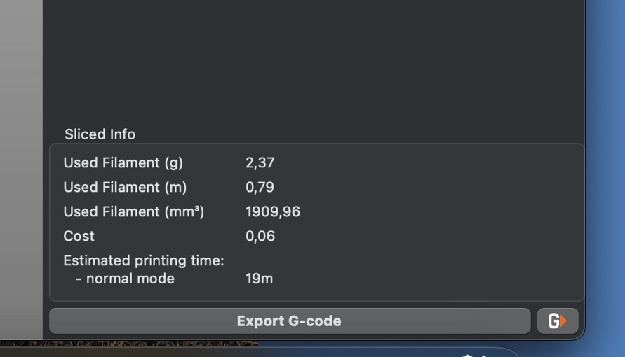
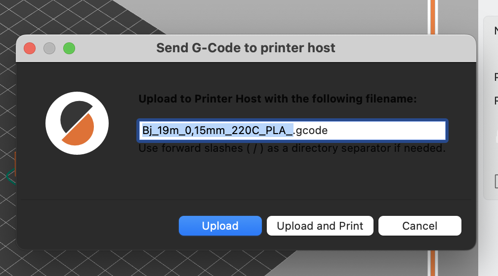
Bilden visar hur lång tid det tar att skriva ut modellen. Estimated printing time.
Tryck på G. För några skrivare syns inte G.et, men det går bra ändå.
Din fil får ett namn med suffixet .gcode
Tryck UPLOAD&PRINT
Tryck ENTER att starta utskriften. OBS! UTSKRIFTEN STARTAR PÅ EN GÅNG
Egen dator
Om du har egen dator behöver du ladda ner config filer till SOVOL printrarna.
Filerna bör finas på ett USB-minne som Björn Engström har????
Jag vet ej hur man installerar dem???